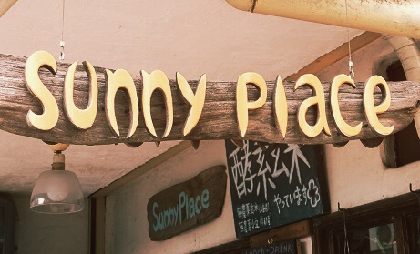

<!DOCTYPE html>
<html lang="en" dir="ltr">

<head>
  <meta charset="utf-8">
  <title>GW　REPORT</title>
</head>

<body>

</body>

</html>
<h1>SUNNY PLACE</h1>

<br>
<a href="https://www.sunnyplacekyoto.com/">SUNNY PLACE : Home page</a>
<ul>
  <nav>
    <ul>
      <header>
        <h2>~ Vegan Lunch Restaurant ~</h2>
      </header>
      <br>
      <b>ゴールデンウィークにヴィーガンランチレストランの”SUNNY PLACE"に行ってきました〜 ⭐️　　</b>
      <br>
      <br>
    </ul>
  </nav>
</ul>
<article>
  <h3>” What’s a Vegan ? ”</h3>
  ヴィーガニズム、または絶対菜食主義は動物製品の使用を一切行わない生活様式。<br>
　1994年でイギリス発祥。<b>「人間は動物を搾取することなく生きるべき。」</b>という理念に基づいて広まっていく。<br>
<br>
<ul>
<b>〜いろんなヴィーガニズム〜</b><br>
  <br>
<b><li> エシカル・ヴィーガニズム</b>（動物の保護、動物の商品化の全面否定）</li><br>
<b><li> ダイエタリー・ヴィーガニズム</b>（健康面への配慮から動物性食品の排除）</li><br>
<b><li> エンバイロメンタル・ヴィーガニズム</b>（環境面において畜産業が持続可能でないとして動物製品の使用を拒否）</li><br>
</ul>
<br>
<h3>About-SUNNY PLACE</h3>
<ul>
<li>住所：　<b>京都市左京区　田中大堰町 168-2</b>（京都大学　吉田キャンパス付近・百万遍通り）</li>
<li>営業時間：　<b>月〜木 ・ a.m. 11:30  ~  p.m. 15:30</b></li>
<br>
   2001年にオープン。その後、店を母からついで現在はヴィーガンランチストラン。<br>
   動物性食品不使用のため、肉料理や魚のフライなどは味わえないが、代用食品を使用し、限りなくその食感や味を再現している。<br>
 </ul>
<br>
<h3>代用食品（一部紹介）</h3>
<br>
<ul>
<li>肉→<b>大豆ミート</b>（スーパーLIFEに売ってます！）</li><br>

<br>
<br>
<li>乳製品→<b>ココナッツミルク、アーモンドミルク、ライスミルク、豆乳...</b></li><br>

<br>
<br>
<li>卵→<b>バナナエッグ、豆腐エッグ、コーンスターチエッグ...</b></li><br>


</ul>
<br>


    <h3>SUNNY PLACE   ~menu~</h3>
    <br>
    <ul>
  <li><h4>ヴィーガンランチセット</h4></li>
　<b>→日替わりメインディッシュ /
　酵素玄米 日替わりスープ オーガニックサラダ 副菜３品</b>　 ￥1,200
<li><h4>プラントベースカレーランチセット</h4></li>
　<b>→カレー2種 バスマティライス オーガニックサラダ</b>　 ￥1,000

<li><h4>オーガニックコーヒー</h4></li>
　<b>→エチオピア産コーヒー豆を使用したオーガニックコーヒー</b>   ¥200

<li><h4>豆乳チャイ</h4></li>
 <b>→オーガニックスパイスを使用した豆乳チャイ</b>  ¥500

<li><h4>玄米コーヒー</h4></li>
　<b>→玄米を使用したコーヒー風味のノンカフェインドリンク</b>  ¥500

<li><h4>グリーンスムージ</h4></li><b>　→季節のスムージ</b>　￥700
</ul>
<br>
    <h3>注文した料理:  日替わりメインディッシュ 酵素玄米 日替わりスープ オーガニックサラダ 副菜３品 ￥1,200</h3>
  <p>　</a></p>

  <ul>
  <li><h4>大豆ミート使用の（フェイク）肉の唐揚げ。</h4></li><br>
→大豆をひき肉のようにすりつぶし揚げたもので、噛むと肉汁が出るところまで、味や食感は肉そのもの。<br>

<li><h4>レタスにかかているドレッシング（鮮やかなピンク色）</h4></li><br>
→ビーツ（紫玉ねぎ）を液状にしたもの。（他にも、りんご、レモン、ハチミツ　使用）<br>

<li><h4>ジャガイモとひよこ豆の煮物</h4></li><br>
<br>
<b>ひとことコメント！</b><br>
<br>
味も美味しかったが、食と健康に対する意識の高さ。加えて、代用食品など、新しい食材料の発見をさせてくれた！。
<h4>ごちそうさまでした！また来ます！</h4>
</ul>


<br>
<br>

   </article>
     <article>
  <h3>〜初めてヴィーガンレストランを訪れての感想〜</h3>
  <br>
  ヴィーガンのような菜食文化はアメリカやイギリスのような国と比べて、日本ではあまり普及していないが、ネットショッピングでは動物性食品不使用の商品のバリエーションが豊富になってきた。<br>
  だから「sunnyplace」のようなレストランに行けたことはとても嬉しかった。<br>
  自分自身、ヴィーガンではないが興味があって実験的にそれに近い食生活を送ることもある。<br>
  というのも、食に対する考え方の変化があったからだ。<br>
  今までの常識では、「人間は雑食なんだから、食べるものなんて特に意識して選ぶ必要はない。」とか「美味しいものを食べるのが1番！」なんて考えていた。<br>
  しかし、今は、<b>私たちの食がどのような方法、環境によって支えられているのかを、知る権利と義務があって、その上で食べるものは選択するべきだと思っている。</b><br>
  （私はと言うと、畜産や漁業が地球環境を深刻に害していると知って、今までの食生活を変えていく必要があると考えている。）<br>
<br>
  永遠長々とかくのは疲れるので、ここら辺で感想を締めくくる。<br>
  代りに、私が"You Tube"で見ているヴィーガンの動画を<b>シェア</b>したいと思う！<br>

  <header>
    <h3>~ 菜食に関する動画・サイト　~</h3>
  </header>
  <br>
  <ul>
<li><a href="http://peacefulcuisine.com/category/videos/">PEACEFUL CUISINE / Home Page</a></li>
ヴィーガン料理を作っている「TAKASHI RYOUYA」さんの公式ホームページ。<br>
自身の活動のことや自身の本・アプリなどの紹介もしている
<br>
<br>
<br>
<li><a href="https://www.youtube.com/channel/UCQBG3PzyQKY8ieMG2gDAyOQ">PEACEFUL CUISINE / YouTube Page</a></li>
「TAKASHI RYOUYA」さんのYouTubeサイト。<br>
ヴィーガンの料理レシピの紹介など。
<br>
<br>
<br>
<li><a href="http://www.vegworld.jp/about/">ベジワールド　/ Home Page</a></li>
動物の保護活動、ヴィーガン料理の紹介など。
<br>
<br>
<br>
<li><a href="https://www.youtube.com/channel/UCU_yAJ41h9LWLr1BRyTUEpQ">ヴィーガン男子 / YouTube Page</a></li>
ベジワールドと運営してる人は同じ。<br>
YouTubeを通してヴィーガンの思想を広めている。
<br>
<br>
<br>
<li><a href="https://nutritionfacts.org/">NutritionFacts.org（最新の栄養学研究の成果をフリーで提供しているサイト）</a></li>
このサイトの運営者「マイケル　グレガー」さんは『How not to die』という栄養学の本も書いている。
<br>
サイトも本も、全部英語　⭐️
<br>
<br>
<h3>Here, the end!</h3>
</ul>


  <br>
</article>
